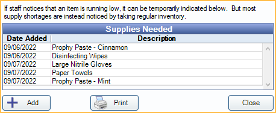

Supply Inventory
Use supply inventory to keep track of suppliers, equipment, supplies, and orders.
In the Manage Module, click Supply Inventory.

There is a menu across the top and three buttons.
- Suppliers: Set up suppliers. This must be done before supplies or orders can be added. See Suppliers.
- Categories: Define supply categories in Definitions: Supply Categories. This must be done before supplies or orders can be added.
- Equipment: Equipment for payment of property taxes.
- Orders: View placed or pending Supply Orders.
- Supplies: View Supplies used by the practice.
Suppliers and Categories
Suppliers: Click to set up Suppliers. This must be done before users can add supplies or orders.
Categories:: Click to set up Supply Categories. This must be done before users add supplies or orders.
Equipment Orders Supplies

Equipment: Click to view or set up Equipment for payment of property taxes.
Orders: Click to view placed or pending Supply Orders or create new orders.
Supplies: Click to view or set up Supplies used by the practice.
Supplies Needed
The Supplies Needed list is completely independent of any supplier or the main supply list. It is a free-form list where any staff can quickly jot down an item that is running low. The person responsible for ordering supplies should review this list. Once a supply is added to an order, it should be deleted.
Click Add to enter a new item or double-click an existing item to edit. The Supply Needed window, shown below, will open.

Date: Date the item is being added to the Supplies Needed list.
Description: Description of the item needed.
Click OK to add to item to the Supplies Needed list or save any changes.
Click Delete to remove an item from the Supplies Needed list once it has been ordered.